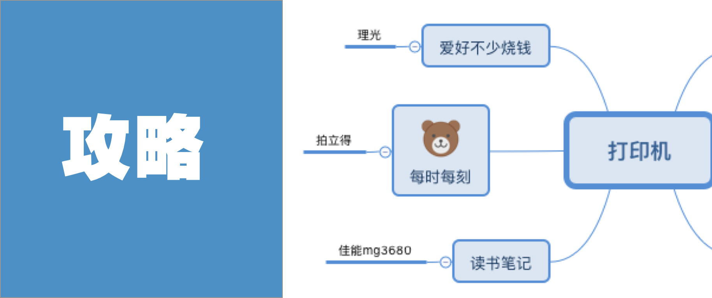

攻略|喵喵机pk千元机，打印机挑选指南

关注 秋秋很开心 🎵
努力做一个“治愈+宝藏”女孩

又是新的一天呀
这是一篇超全的打印机测评+使用文章。我一直认为，生活需要仪式感，而记录，真的也能让生活更美好～

希望看完这篇文章，你能get到更多，不局限打印机的用法等等（目录查看）👇

废话不多说，那就开始啦！
1

这个看起来像ins的图标，其实是个黑白打印机。我购买的时间是考研期间，主要用来做学习计划。

在考研后期它真的帮了我好多，尤其是打印背诵材料，快捷省钱又高效。
我的用法
1.打印学习资料
这个打印机的使用方法是：手机蓝牙连接，手机store里有专门的app，打开里面自带素材。
也就是说你不仅可以打印，自己想打印的东西，也可以直接打印app里自带的东西。


像英语单词、各种学习资料都是小儿科，每日美文、空心字、画画描边素材、甚至公众号one，那种每日句子都有，只有你想不到，没有它做不到。


（里面可以订阅各种素材）
虽然内容很多，但是注意，这个打印出的尺寸限定宽45mm，所以其实袖珍。不是很适合阅读，就别指望打大的学习资料。

2.打励志横幅
虽然竖着不适合打大段文字，但是打横幅是一把好手。
这个功能也是我考研的时候发现的，就经常打印出一条长长的大字 鼓 励 自己。

（宝儿姐的女人绝不认输👆）
有时候也会给我男朋友打印一个对应。

大字除了贴墙上，也可以剪开贴手帐本上，特别方便还很好看。
3.打印手帐素材
前面说了喵喵机自带的app里面有很多素材，除了学习资料，各种图片当然也应有尽有！


而我最喜欢的就是打印时间轴做手帐用，比自己画方便太多～

配合一些图片，黑白极简风手帐直接搞定，再也不用担心没有手帐素材！


（我做的黑白手帐）
4.打印表情包


和前面的打印手帐素材相似，依旧是只能打印黑白，但是好在还算清晰。
没事和同学朋友传个小纸条还是挺有趣的～（里面还有喵喵机信箱，知道编号可以直接留言，它会自动打印，很可爱）

但是后来我觉得这种白纸没有质感，又“高价”买了上面这种纸打印，顿时质量up up

（左下角高端纸，右下角普通纸
普通纸都掉色看不清了）
5. 当拍照道具
无论是和手帐本合拍，还是放在书桌上，它其实都很好看。
所以哪天质量有问题，当个道具也很合格了。

| 总结 |
价格100多～
app内有很多可以打印的东西
颜值高很可爱
考研党非常值得入～
2

前面的喵喵机再好，也不能打印彩色照片，所以在大学毕业后第一个月，我就入手了它～

记得佳能有一句很风靡的广告语：感动常在。而每一次打印的照片出现在眼前的时候，我还真有点感动。
我的用法
1. 打印简历照片
生活中经常会用到1寸、2寸的照片，这个打印机打印出的质量和打印店完全一样，可以直接插入U盘，非常方便～

我入职公司还有学校交的材料，都是我自己打印的～
2. 旅行手帐
除了读取U盘，佳能cp1200这款也可以直接连接无线网。
打印的时候 ：手机选择照片——打印——选择佳能cp1200 就可以了。


因为打印出来就是照片，有一点贵（一张相纸3块钱），所以我的办法都是在手机上用软件先拼好，一张照片拼8张，再打印。


每一段时间把出去玩的照片打印出来，整理、回顾，觉得非常温馨，也是见证自己的成长。
想想自己来北京都一年多了，也是这些照片帮我留住了时间。

3. 家人拍照纪念📷
前一段时间我和我男朋友家人来北京玩，他们逛完之后，都会拍很多照片。
而对于父母来说，可能不经常看手机照片。那时候我就直接帮他们打印出来，他们特别开心。

真实的记录，现在或许不再重要。但是当真的照片放在手心上，我们还是会被暖到。
4. 做观影笔记
这个功能就很简单了，每次看完书或者电影就去豆瓣上找好海报，然后拼好后打印即可。


简单的记录下自己看过的东西，会让电影对自己的影响拉长。我是享受记录的过程的，所以看完希望都能记录下来。
5. 贴照片墙
最后这些照片打印出来，还可以贴在墙上，以前我的书桌就是这样的👇

一抬头就看到去过哪些地方，还有我一路走来的点点滴滴，感觉自己挺幸福的～
| 总结 |
打印照片质量很高～
可以拼图一次打印很多
常年用不坏的东西，值得入～

3

这台打印机的型号是mg3680，可以打印很多大文件。当时入的目的是打印思维导图。

现在我男朋友打毕业论文也天天用多，感觉比出去打印方便多了。
我的用法
1.打印思维导图
这个就是打印店里那种打印机，所以彩色黑白，A4、B5都可以。
我的用法，最开始是把做好的思维导图打印出来自己装订。


这样做笔记的时候不会乱掉，而且比在纸上画思维导图方便的多。
2. 打印手帐素材
喵喵机不能打印彩色、佳能cp1200相纸很贵，我就想要不用这个打印手帐素材？


然后，真香！我get到了这个神奇的技能！
这个打印一次能用好久，鉺网上打印一张要1块钱，我自己打印一张几分钱......不知道这样算不算给自己省钱了。
3.论文材料
最后，其实也是它最大的功能，就是打印资料和论文之类的。
我入行做编导之后打印了很多材料，真的这个打印很便宜，现在几乎就是想打印随时打印的状态。

| 总结 |
打印文字量很大
比单独打印资料省钱～
功能很多也值得买～

4


前面写的3款打印机，就是打印的功能。
而接下来的拍立得和理光其实就是相！机！但是写因为他们也和打印有关系，就顺便说啦～

我的感觉，拍立得真的很方便，也很好操作。对于那种想立即看到照片的人，第一次使用就幸福感up up
但是缺点就是纸真的真的很贵，而且小小的一张也不能拼图，我通常只用来记录重大日子，因为穷，我日常都不怎么用。
另外推荐闲鱼入，会便宜很多～
| 总结 |
方便携带
能记录此时此刻
经常用，相纸比相机的钱贵～
5

终于写到我最爱的理光了！当时买是想着要把北京的日子记录下来，然而....
因为想记录，所以经常出去玩，因为出去玩，所以慢慢学会了P图拍照....因为会P图，更想出去玩，然后就买了上面一堆...

（我用理光gr2拍的水）
但是理光相机真的带我走近一个领域的大门，就是摄影和记录。
关于相机的使用，这里就不多说了（我觉得还需要专门拿一篇去写，快门光圈ios色温我也要学）这里就简单看看理光优秀的色调吧。
1.蓝色调（号称理光蓝）


网上学的调色，可以拍出特别静谧和内敛的感觉，适合去海边的时候用，还有的时候想做个文静girl，就用这个色调。
2.粉色调（日系小清新）


暖暖的粉色调，或者是非常清透的颜色，我的方法都是把亮度调高，大光圈，色调里面加紫色和绿色。
3.暖棕色（温暖和食物）


适合拍食物和日常，也是我现在相机固定的参数。当然除了以上色调，我也在积极学习其他色调和寻找自己其他拍摄风格。
最后，在打印机里写理光，真的是因为我打印的需求，都是因为买了相机！
| 总结 |
很适合拍各种风格照片
自带复古胶片感
让你开启打印的世界～

其实，有句话我一直特别喜欢，我们的过去，塑造了现在的我们。
在时光飞逝、物质纵横的今天，我觉得记录是一件更难得的事情，但是生活真的是有很多小美好，值得记录的。
打印机本身只是一个工具，能用这个工具捡起许多生活中的小美好，我觉得非常值得。所以不管是100多的喵喵机还是几千多的胶片机，本质都是一样的。
希望看完这篇文章，你能get到一款最适合自己的打印机，也希望我们能一起热爱生活。
我是秋秋，写这篇用了很多心血，希望大家点个「在看」支持一下吧～
篇篇都很精彩，一定记得设置星标～

一 个 能 很 认 真 的 公 众 号
HAVE A NICE DAY
☕️
♦️ 有 帮 助 的 ♦️

合 作 联 系：cinleung@163.com
点个 “在看” ，给我动力